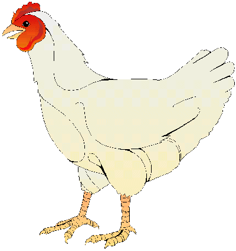

<!DOCTYPE html>
<html lang="hu"></html>
<head>
<meta charset="UTF-8">
<meta http-equiv="X-UA-compatible" content="IE=edge">
<meta name="viewport" content="width=device-witdh, initial-sc
<title>hazityuk</title>
<link rel="stylesheet" href="stilus.css">
</head>
    <body>
        <div>

        <h1>Elnevezés</h1>
        
        A házityúk(Gallus gallus
         domesticus)
        <ul>
            <li> 1-2 hetes koráig:
                csibe</li>
        <li>ivarérettséget megelőzően:csirke 
            vagy jérce</li>
       <li>ivarérett hímnevű egyede:kakas</li>
        <li>ivarérett mőnemű egyede:tyúk</li>
  
        Háziasított madárfaj,mely a háztáji baromfik legelterjedtebb tagja,
        néha még magát a baromfi szót is használják a csirkék megnevezésére.
        Mind húsát,mind tojásait előszeretettel fogyasztják az emberek.
        számtalan fajtáit,változatát tenyésztik.
        <p>
       
        </body>
        </html>
                


            